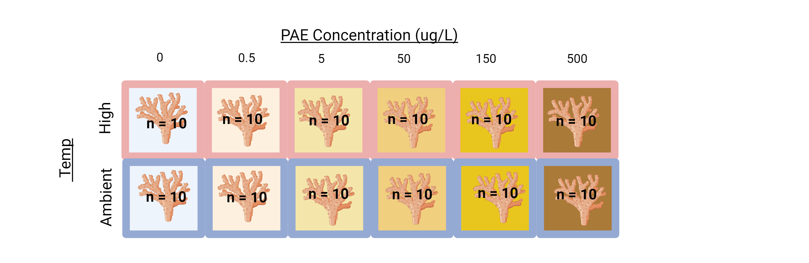
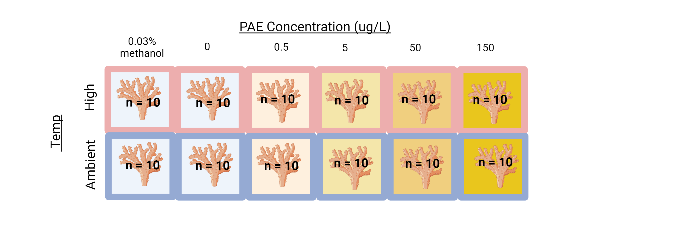
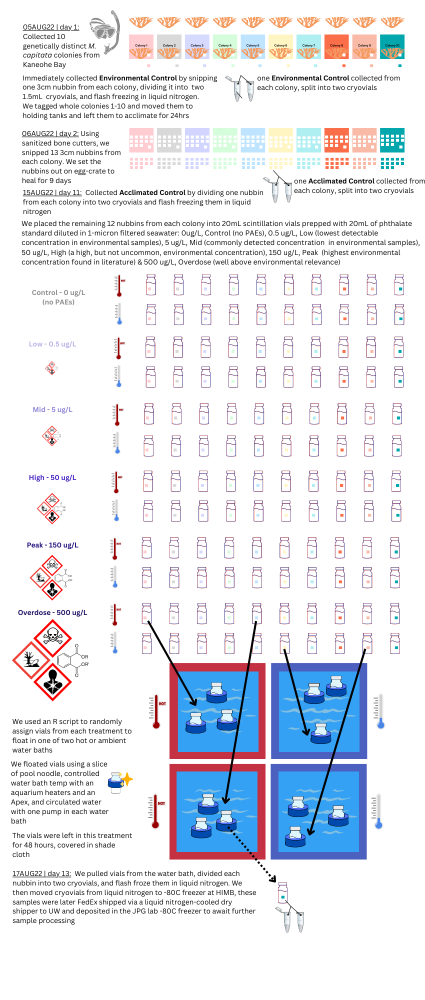

Tuesday Nov 21st 2023
Agenda
Introduce issue with lack of solvent control in experimental design - 5 mins
Introduce options for addressing the issue - 15 mins
Seek feedback & advice - 40 mins
Committee
- Supervisory Committee Chair - Dr. Jacqueline L Padilla-Gamiño, jpgamino@uw.edu
- Committee UW SAFS Core Faculty - Dr. Steven B Roberts, sr320@uw.edu
- Committee UW SAFS Core Faculty - Dr. Amy Van Cise, avancise@uw.edu
- Committee Member - Dr. Jesse R Zaneveld, zaneveld@uw.edu
- Graduate Student, (Master’s Thesis) - Sarah S Tanja, stanja@uw.edu
Agreements
From the 2022-23 SAFS graduate student guide:
“The Chair and at least one-half of the total membership must be members of the Graduate Faculty. A minimum of two committee members must also be SAFS Core faculty. The supervisory committee will provide expertise and depth in areas related to the student’s research. The student should rely primarily on the Supervisory Committee Chair and secondarily on the other committee members for professional guidance.”
- We will work with open, honest, and kind communication
- We will prioritize doing fewer projects well over many small projects poorly
- We acknowledge that we may be working flexibly or remotely from different time-zones
- Sarah will organize her research with
GitHubto foster open science- tips on writing & editing a manuscript with multiple reviewers using
GitHub
- tips on writing & editing a manuscript with multiple reviewers using
- Sarah will organize all committee meetings, and be responsible for reaching out to individual committee members for help when she needs it
- Sarah is on a learning curve and will need to reach out to the committee for guidance; at the same time it is her responsibility to own the project and learn the analyses she is conducting
- Sarah will maintain an open lab notebook and post (at least weekly) to it
Sarah’s Thesis Progress
Thesis Research Questions
What are the combined effects of temperature and phthalates on the M. capitata coral microbiome?
What are the combined effects of temperature and phthalates on M. capitata coral gene expression?
Broad & Tangential Research Interests…
Does gene expression covary with microbiome composition(Fuess et al. 2021)? 4
Does plastic pollution undermine resilience to thermal stress?
Does plastic pollution reduce photosynthetic efficiency and ocean primary production?
4 A new question that I’ve been curious about, but that may not fit into the scope and timeline of a Master’s Thesis
ISSUE
Lack of Solvent Control
I used the EPA 506 phthalate esters mix 1 as my standard from which I created my phthalate doses.
The EPA 506 phthalate esteres mix 1 is a 1mL vial that includes the 6 most common phthalates added to consumer products each at a concentration of 500\(\mu\)g / mL, (500,000\(\mu\)g/L) in methanol.
However, I neglected to include a methanol solvent control in my experimental design.
This means that I can’t fully attribute the differences I see between my treatments to the presence of phthalates. They may be due to the methanol solvent interactions along with the phthalates!
There are a few examples of ecotoxicology studies on phthalate plasticizers that use a solvent control (Park, Kim, and Kwak 2019, 2020; Zhu et al. 2022), and others that don’t mention a solvent control (Zhou et al. 2022).
Still other studies that focus on different environmental toxins use solvent controls as common practice (Mauduit et al. 2023).
What I did:

| Initial [PAE](ug/mL) C1 | Target [PAE](ug/mL) C2 | End Volume (mL) V2 | Volume of Initial [PAE] (mL) V1 | Volume of Filtered Seawater(mL) | [methanol] |
| 500 | 0.5 | 500 | 0.5 | 499.5 | 0.100000% |
| 500 | 0.15 | 1000 | 0.3 | 999.7 | 0.030000% |
| 500 | 0.05 | 1000 | 0.1 | 999.9 | 0.010000% |
| 0.05 | 0.005 | 1000 | 100 | 900 | 0.001000% |
| 0.005 | 0.0005 | 500 | 5 | 495 | 0.000010% |
If I could turn back time5:

I would dilute 0.3mL, 300uL of 100% methanol in 1000mL of 1-micron filtered seawater to get a 0.03% treatment of methanol to act as the carrier solvent control.
| Initial [PAE](ug/mL) C1 | Target [PAE](ug/mL) C2 | End Volume (mL) V2 | Volume of Initial [PAE] (mL) V1 | Volume of Filtered Seawater(mL) | [methanol] | Volume of methanol added (uL) | Final [methanol] |
| 500 | 0.15 | 1000 | 0.3 | 999.7 | 0.030000% | 0 | 0.03% |
| 500 | 0.05 | 1000 | 0.1 | 999.9 | 0.010000% | 206.2 | 0.03% |
| 0.05 | 0.005 | 1000 | 100 | 900 | 0.001000% | 298.9 | 0.03% |
| 0.005 | 0.0005 | 500 | 5 | 495 | 0.000010% | 154.5 | 0.03% |
Example problem:
- Determine the current amount of methanol in the solution:
Current methanol in solution = (0.01/100)*1000 mL = 0.1 mL
Set up an equation for the final amount of methanol in the solution, which should be 0.03% of the total volume:
Final methanol in solution = (0.03/100) * (1000 mL + x)
Here, x is the volume of methanol you need to add.
Set up and solve the equation:
0.1 + x = (0.03/100) * (1000 + x)
Solve for x:
0.1 + x = 0.03 * (10 + x)
0.1 + x = 0.3 + 0.03x
0.97x = 0.2
x ≈ 0.2062 mL, 206.2uL
5 Like Cher on the USS Missouri in June of 1989
OPTIONS
1. Filter & justify
I could address the issue of the lack of methanol control in the microbiome chapter by filtering out the methylophaga bacteria that are known to ‘feed’ on methanol. This is operating under the assumption that the methylophaga bacteria present in all the samples, but especially in the ‘polluted’ samples, were only present because of the methanol solvent. This doesn’t attribute other potentially pathogenic bacteria to the presence of methanol. It’s a pretty weak method of addressing the issue.
I could further justify the results of any differences in differentially expressed genes in the transcriptomics chapter by focusing the discussion on known pathways that are affected by phthalates, such as those involved in oxidative stress, and the transcriptions of enzymes like superoxide dismutase (SOD), catalase (CAT) and peroxidase (POD). Similar to above, this is a pretty weak method and it’s likely those same pathways may be affected by the methanol solvent.
| Pros | Cons |
|---|---|
| fastest, cheapest | not publishable? |
| no throwing away data, not wasteful | results are still confounded |
| realistic: I’m just a student and here’s what I learned in the time I had | It looks bad to have spent 3 years in a grad program with no publications |
This is the easiest, quickest option. However, it seems unlikely that the results from this would pass peer review and make it into a published manuscript. The results from this option may have too many limitations to be impactful.
2. Conduct separate solvent experiment
This would involve justifying the existing data with a separate study that looks at the impacts of only the methanol solvent on the coral microbiome and gene expression. Unfortunately, this would still involve traveling to HIMB, setting up the experiment, and running a 6X2X10 factorial experiment (120 samples!) because each concentration of phthalates corresponds to a different concentration of methanol solvent.
| Initial [PAE](ug/mL) C1 | Target [PAE](ug/mL) C2 | End Volume (mL) V2 | Volume of Initial [PAE] (mL) V1 | Volume of Filtered Seawater(mL) | [methanol] |
| 500 | 0.5 | 500 | 0.5 | 499.5 | 0.100000% |
| 500 | 0.15 | 1000 | 0.3 | 999.7 | 0.030000% |
| 500 | 0.05 | 1000 | 0.1 | 999.9 | 0.010000% |
| 0.05 | 0.005 | 1000 | 100 | 900 | 0.001000% |
| 0.005 | 0.0005 | 500 | 5 | 495 | 0.000010% |
This would be a lot of effort because we would have to make a solvent carrier control for each treatment, which had increasingly diluted concentrations of methanol.
I think this is lots of effort, and still quite risky. It’s risky because if we find large differences in the filtered seawater control and the methanol, it will be hard to apply those differences to the existing dataset because the experiment would be occurring with different coral colonies in a different season.
We could reduce effort by just redoing the highest concentration (150ug/L [PAE] & a 0.03% methanol control)
| Pros | Cons |
|---|---|
| no throwing away data…. | have to process and sequence an additional 140? samples |
| could this be done with a smaller n? | still have to travel to HI and take time to run experiment & do extractions |
3. Redo with solvent control
We could redo the whole experiment with a single solvent control by increasing the concentration of methanol solvent in each treatment to be uniform.6
6 Big thank you to Celeste Valdivia who introduced me to this method for ecotoxicologists!
| Pros | Cons |
|---|---|
| genotypes & season are the same | travel to HI, takes time to run experiment & do extractions |
| one solvent control in place of the ‘overdose’ treatment | still would have to process 6x2x7=84 samples for DNA/RNA |
| could reduce n from 10 to 7 to make things more manageable | handling hazardous chemicals… again 😞 |
| throwing away existing data |
4. Redo using home-brewed leachates
We could redo the whole experiment and sub in home-brewed leachate instead of the EPA 506 Phthalate ester mix, thus getting rid of the need to run a solvent control.
| Pros | Cons |
|---|---|
| genotypes & season are the same | travel to HI, takes time to run experiment & do extractions |
| no solvent control, no need for hazardous chemical handling | still would have to process 6x2x7=84 samples for DNA/RNA |
| could reduce n from 10 to 7 to make things more manageable | don’t know if we’re hitting the target of environmentally relevant concentrations |
| More environmentally realistic to show impacts of ‘chemical cocktails’ | can’t pinpoint phthalates in ‘leachate’, less impactful discussion |
| difficult to characterize the ‘chemical cocktail’ | |
| throwing away existing data |
Jackie met with Francesco Saliu on 21NOV2023 and they spoke about using plastics from his studies in which he has already characterized PVC leachate ‘chemical cocktail’ and the associated phthalates.
5. Redo with Aiptasia model organism
| Pros | Cons |
|---|---|
| model organism for coral | they’re mostly clones |
| could keep and manipulate at UW | it has already been done (klein2021a?) |
| fully annotated genome Exaiptasia diaphana |
6. Redo microbiome study with PNW crustose coralline algae (CCA)
| Pros | Cons |
|---|---|
| hasn’t been done | only annotated genome is contaminated and for Porolithon onkodes, … not a great candidate for gene expression |
| microbiome of CCA is relevant to invertebrate settlement and related to other work in our lab (abalone restoration) | cryptic, can’t tell species apart |
| could keep and manipulate at UW |
Original Experimental Design
PAE-TEMP | M. capitata Acute Phthalate & Thermal Stress Exposure (As conducted in August 2022)
graphical methods
In Summary: the coral-pae-temp experiment resulted in a total of 140 samples, with an n=10, that were flash-frozen in liquid nitrogen and can be used for DNA/RNA studies.
Other Limitations:
Closed system: In order to ensure the phthalate concentration was controlled in each treatment, the 20mL scintillation vials were a closed-system, and the corals did not receive water changes during the short 48hr exposure. Because of this, I expect we will see degradation between the environmental and experimental control samples. Good news, we didn’t see this in microbiome pilot data
Ubiquitous exposure: This study can’t account for the fact that corals in Kaneohe Bay may already be exposed to chronic low-levels of PAE pollution, so we can’t say our control baseline is ‘zero PAE exposure’.
Treatments not characterized: A large limitation is that the pollution treatments were not characterized by mass spectroscopy to verify the treatment levels. This instrumentation was simply not available to us at the time.
Replication dificult: Replication may be difficult because it relies on the use of EPA 506 phthalate esters mix 1, which may pose harm to researcher health, and may not be the best chemical mix to use for these investigations.
FEEDBACK
I was able to meet with Amy and Steven from 12:30-1:00PM
They suggested that as a Master’s Student it may be acceptable to work with the existing samples and dig into the limitations with post-hoc analysis of the data.
Amy suggested running a regression on the abundance of Methylophaga and the concentration of methanol to justify filtering it from the dataset.
I met with JPG and Jesse from 1:00-1:30PM
Jesse saw that at face value, the effects of methanol are confounded by the effects of phthalates. He suggested a ‘validation study’ that looked at the effects of the highest concentration of methanol (0.03%) from the 150ug/L PAE treatment on the microbiome, as a compromise to getting the most out of the existing samples with the least additional effort.
They agreed that reaching out to Alison Gardell to get the opinion of an ecotoxicologist would be a good way to get further clarification.